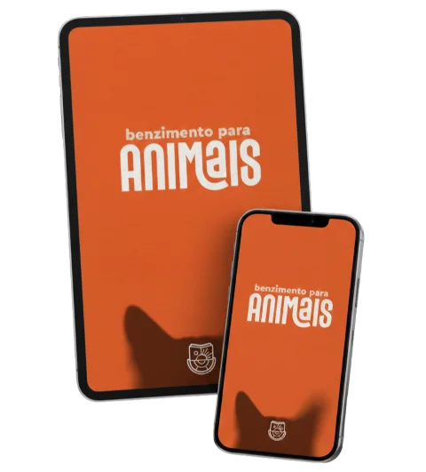
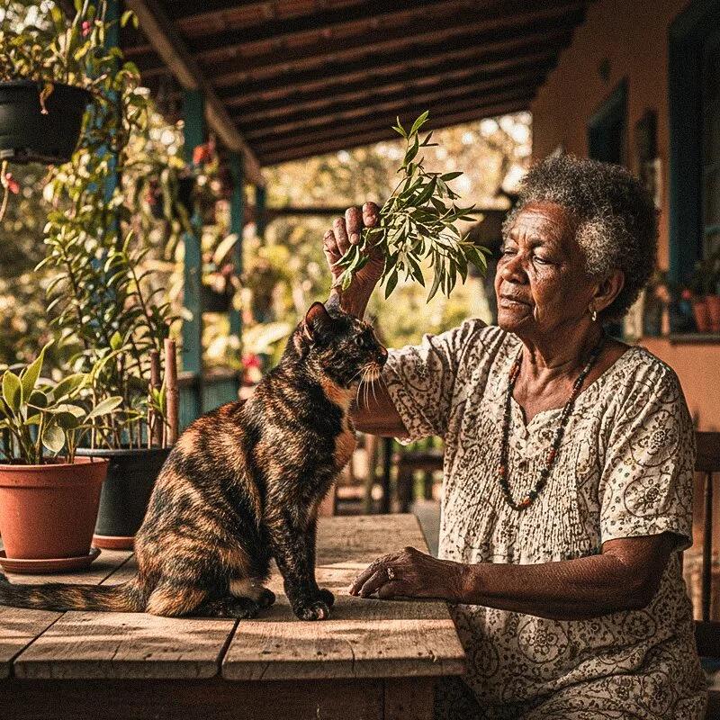
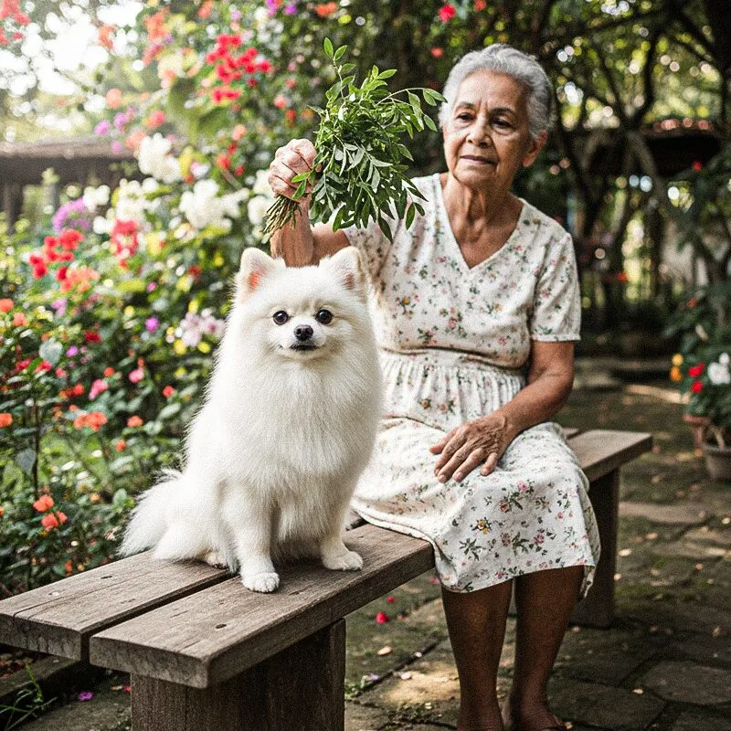
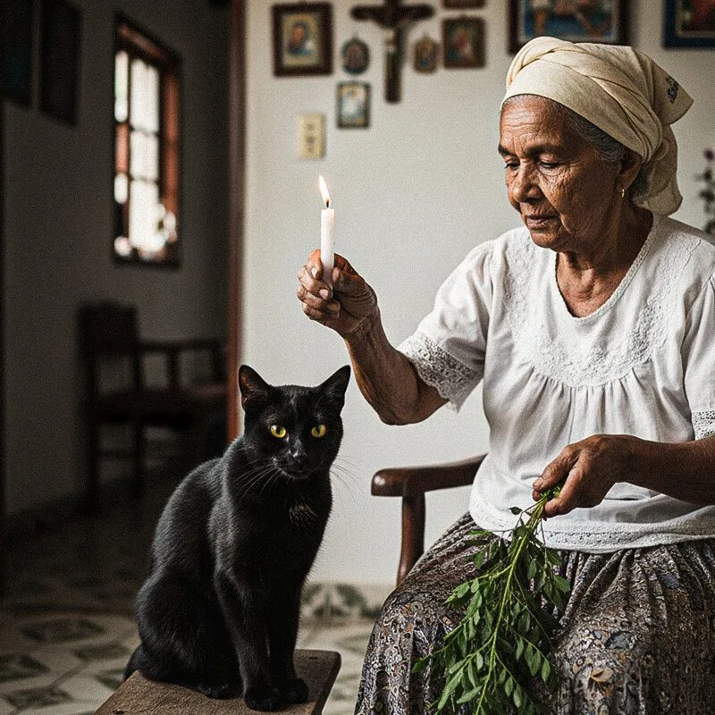
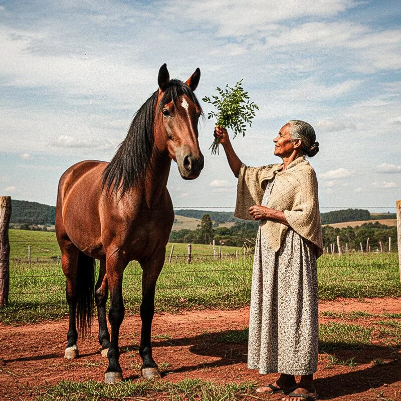
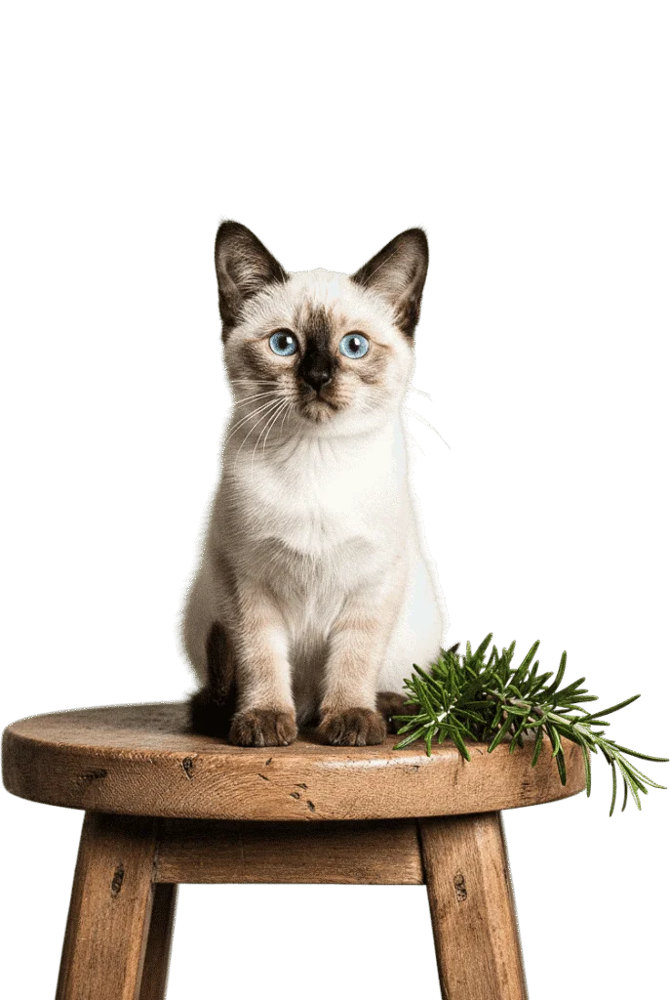

Incluso Aula Prática de Benzimento!
USE O BENZIMENTO SAGRADO PARA Proteger, curar e acalmar seu animal
100% DIGITAL, em pdf no seu Whatsapp e e-mail
Benzimentos completos PARA SAÚDE DO SEU ANIMAL
PASSO A PASSO: PLANTAS SEGURAS, GESTOS CORRETOS E PODEROSOS
FINALMENTE: BENZIMENTOS PODEROSOS PARA SEU ANIMAL, SEM COLOCAR ELE EM RISCO
Imagine ter nas mãos exatamente o benzimento certo para cada momento que seu animal precisa.
Cachorro agitado ou assustado? Tem benzimento para isso.
Seu gatinho com mal estar? Tem benzimento para isso.
Foi operado e precisa se recompor? Tem benzimento para isso.
São mais de 20 benzimentos completos e seguros com instruções claras de como fazer sem estressar ou machucar seu companheiro.
Você só precisa:
- Ler os sinais do seu animal como ensino no guia.
- Abrir o guia e escolher o benzimento certo.
- Usar plantas seguras e indicadas.
- Falar as palavras com amor!
Pronto. Você acabou de benzer seu animal com segurança, respeito e poder.
É isso. Cinco minutos. Sua voz. Sua intenção. Seu amor.
Esse cuidado sempre foi possível.
Agora você sabe como fazer do jeito certo.

DENTRO DESTE GUIA, VOCÊ ENCONTRA TUDO O QUE PRECISA PARA BENZER SEU ANIMAL COM SEGURANÇA E AMOR
Esse não é um PDF com teoria vaga ou “histórias sobre benzimento”.
É um guia completo e prático que te ensina desde a preparação até a execução perfeita de cada benzimento.
Veja o que você
vai ter nas mãos:

FUNDAMENTOS DO BENZIMENTO ANIMAL TRADICIONAL

A LISTA DE GUARDIÕES DOS ANIMAIS

APRENDA A LER O CORPO E A ALMA DO ANIMAL

CONHEÇA AS PLANTAS SEGURAS PARA ANIMAIS

Cada benzimento inclui:
Explicação espiritual do que está acontecendo
Passo a passo detalhado de como fazer
A reza completa pronta para usar
Orientações de segurança para não estressar o animal
Como encerrar o benzimento corretamente
Lembretes importantes sobre tratamento veterinário
veja um exemplo
Benzimento para Acalmar Coceira e Irritação na Pele
A coceira é vista como um “calor” ou agitação que tira a paz do animal. A intenção é “resfriar” espiritualmente essa irritação, trazendo alívio e serenidade.
IMPORTANTE: Como a coceira pode indicar alergias ou parasitas, este benzimento atua como complemento ao tratamento veterinário, pedindo a intercessão de São Lázaro (protetor contra males da pele).
PASSO A PASSO
Use um ramo fresco de Alecrim ou flores de Camomila. Leve o animal para um local fresco e tranquilo. Fique de lado, sem encará-lo, para transmitir segurança.
NÃO toque o ramo na pele, especialmente se estiver ferida ou sensível. Realize a tecnica do “Benzimento de Ar”, de cima para baixo, visualizando uma luz azul ou verde fresca acalmando a pele do bichinho.
A REZA:
“Fogo que queima, fogo que arde. Sai deste corpo, já é tarde.
Com este ramo santo, eu refresco. Com o orvalho do céu, eu acalmo.
Se é ‘olho’, se é praga ou se é aflição. Sai da pele e cai no chão.
São Lázaro, protetor fiel. Limpa a chaga, adoça como mel. Para que o pelo cresça e a coceira desapareça.
Aqui a dor não fica, aqui a saúde habita. Assim é e assim está feito.”
ENCERRAMENTO:
Descarte o ramo no lixo ou na natureza, longe do alcance do animal. Ofereça um petisco ou carinho suave (em área não irritada) para acalmar o animal.
EstA sabedoria você sempre quis ter!
Agora você tem.
mas quem está por trás
do Guia de Benzimento para Animais?
Este guia é assinado por Edu Parmeggiani, sacerdote, pesquisador da espiritualidade e cientista da religião em formação.
Há mais de 15 anos, ele traduz saberes ancestrais em práticas que funcionam para proteção, abertura de caminhos e conexão com a ancestralidade.
Edu não ensina teorias distantes. Ele oferece clareza e práticas que funcionam para quem deseja resultados reais: proteção, abertura de caminhos e conexão profunda com a própria ancestralidade.
📚 Autor do livro Magia com Plantas (Editora Planeta).
🏛️ Fundador da Escola Contém Magia, com mais de 17 mil alunos no Brasil e no mundo.
🌎 Referência no resgate dos saberes ancestrais e na construção de uma espiritualidade sem dogmas.
CADA BENZIMENTO é uma chave.
Cada chave abre um caminho NOVO DE CURA.
CADA BENZIMENTO É UMA CHAVE
CADA CHAVE ABRE UM CAMINHO
além do guia
você leva 2 presentes:
AULA PRÁTICA DE BENZIMENTOAO VIVO
Nesta aula você vai aprender os 4 fundamentos do benzimento para colocar em prática todas as rezas do seu diário.
AULA “ALTAR DA BENZEDEIRA”
Um guia em vídeo, passo a passo, para montar seu próprio altar de conexão espiritual, mesmo que seja sua primeira vez.
Esses PRESENTES não estão à venda separadamente.
São presentes exclusivos para quem garante o Guia de Benzimento para Animais hoje.
São anos de pesquisa, por um valor simbólico:
Guia de Benzimento para Aniamais R$ 97
Aula prática de Benzimento ao vivo
R$ 147
Aula sobre Altar da Benzedeira R$ 127
Valor Total de
R$ 371,00
Por apenas:
R$ 39,90
ou 8x de R$ 5,68
⚠️ OFERTA POR TEMPO LIMITADO!
Garantia Incondicional
VOCÊ TEM 7 dias para olhar com calma.
Se não for o que você esperava, a gente devolve seu dinheiro.
O que muda
na sua vida a partir de hoje?
Se você AGIR hoje, vai:
- Ter um guia completo com benzimentos prontos para proteger e cuidar do seu animal em qualquer situação
- Benzer com segurança total, sabendo quais plantas são seguras e quais são tóxicas
- Ler os sinais do animal e entender quando ele está confortável ou estressado durante o benzimento
- Fortalecer o vínculo com seu companheiro, cuidando não só do corpo físico, mas também do espírito dele
- Ter autonomia espiritual para proteger seu pet de inveja, mau-olhado e energias negativas
- Complementar o tratamento veterinário com bençãos poderosas que aceleram a cura
- Sentir-se preparada para ajudar seu animal nos momentos difíceis, sem desespero ou dúvidas
Se você NÃO agir, vai:
- Continuar sem saber como ajudar espiritualmente seu animal quando ele mais precisa
- Correr o risco de usar plantas tóxicas que podem intoxicar e matar seu pet
- Ficar dependente de benzedeiras que podem não saber benzer animais com segurança
- Sentir culpa e impotência quando seu animal sofrer e você não souber o que fazer
- Perder a oportunidade de criar um campo de proteção ao redor do seu companheiro
- Ver seu animal estressado ou traumatizado por benzimentos feitos de forma incorreta
- Deixar de fortalecer essa conexão sagrada entre você e o ser que te ama incondicionalmente
Ainda tem dúvidas?
Me manda uma mensagem! Estou aqui para te ajudar. 💜
Mas se você já sabe que esse Guia é para você...
Nunca benzi na vida, muito menos um animal. Vai funcionar para mim?
Sim! O Guia foi feito especialmente para iniciantes. Cada benzimento está explicado passo a passo, com linguagem simples e orientações de segurança. Você vai aprender a ler os sinais do seu animal, usar apenas plantas seguras e benzer com amor e respeito. É literalmente impossível errar seguindo as instruções.
Preciso acreditar em alguma religião específica?
Não. O guia apresenta guardiões de várias tradições (São Francisco, São Bento, Obaluaê, guias da Umbanda, mentores espíritas) para que você escolha quem ressoa com sua fé. Você pode adaptar as orações à sua crença ou usar apenas a intenção e o amor, que são universais.
Posso acessar pelo celular?
Claro! Você pode acessar de qualquer dispositivo: celular, tablet ou computador. O Guia fica salvo na nuvem e você acessa quando e onde quiser. Pode até imprimir se preferir ter em papel.
Como recebo o Guia Benzimento para Animais após a compra?
Uma última coisaantes de você decidir...
E eu sei que você sente, lá no fundo, que seu animal é muito mais do que um bicho.
Ele é família.
Ele é companhia.
Ele é amor incondicional na forma mais pura que existe.
Ele te espera na porta. Te consola quando você chora. Te faz rir quando tudo parece pesado.
Ele confia em você completamente.
E essa confiança é sagrada.
Você já sentiu aquele aperto no peito quando ele geme de dor e você não sabe o que fazer?
Quando ele fica doente e você reza baixinho, pedindo que ele fique bem?
Esse poder existe. E ele sempre esteve em você.
Só faltava alguém te ensinar como usá-lo do jeito certo.
Este guia é a ponte.
Entre a sabedoria das benzedeiras e o respeito que seu animal merece.
Entre o seu coração cheio de amor e as mãos que agora sabem o que fazer.
Quando você abrir este guia pela primeira vez…
Quando ler sobre os sinais que seu cão ou gato sempre te deu e você nunca entendeu…
Quando descobrir que pode benzer sem tocar, sem forçar, sem estressar…
Quando fizer a oração com o coração cheio e ver seu animal respirar fundo, relaxar, aceitar a bênção…
Você vai entender que não era dom que faltava.
Era conhecimento. Era técnica. Era permissão para fazer diferente.
E agora você tem tudo isso.
Este não é só um guia.
É um ato de amor.
Da minha parte para a sua.
E da sua parte para aquele ser de quatro patas que te escolheu como família.
Quando você garante este guia hoje, você não está comprando um PDF.
Você está se tornando a guardiã espiritual que seu animal sempre soube que você era.
E essa… essa é uma das coisas mais sagradas que você pode fazer nesta vida.
Com todo amor por você e bichinho,
Edu Parmeggiani
Sacerdote de Culto Ancestral
P.S.: Lembra da garantia de 7 dias? Você pode acessar tudo, usar as rezas, as plantas, sentir o poder e se não for tudo que prometi, você recebe seu dinheiro de volta. Sem drama. O risco é zero. A transformação é real.